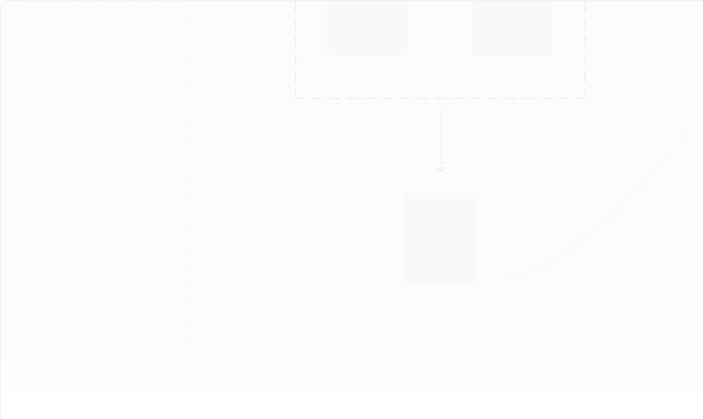

- Theme and display-mode matrix, with every intersection checked rather than assumed
- Glass scrim treatment that holds contrast over variable backgrounds
- Contrast decisions made at token level, so components inherit them

Selen Yel Temellioglu
I design software for people whose hands are already full.
I'm a UI/UX designer and front-end developer at OneWell, working on a workforce management and care support platform for Direct Support Professionals. My users document care during a shift, often one-handed, often while someone is waiting on them. I design across watch, phone and web, and I build the front-end I design.
Appearance
Guides are decorative, so they sit near the paper. High contrast promotes them to real lines.
Logging a task in the fewest taps I can manage
A support professional is mid-shift. Every tap is a second of attention taken away from the person in front of them. Try the flow, and switch the device to see how the same task holds up at three sizes.
One task, because a watch glance is about two seconds. The rest of the shift stays on the phone.
0
taps so far
Pick a task, confirm it, and the shift log updates. Two taps is the target on the watch. Past that, people stop reaching for the watch and pull the phone out instead, which is the behaviour the watch app exists to avoid.
Selected work
open a card for detail- Form structure built around what a support professional can answer in the moment
- Reduced the path from opening the app to a logged task
- Carried the same flow across watch, phone and web without redesigning it three times
- Read-only rows that read as information rather than as disabled inputs
- Required and optional markers that survive translation and screen readers
- Accessibility built into the component, not applied at review
- Product reaction cards paired with UMUX-Lite for a usability and desirability read
- Real participants run against synthetic ones to test where synthetic responses diverge
- Designed to produce something the team can act on, not a satisfaction number
- Shared contract between the front-end and back-end teams for error cases
- Messages that say what went wrong and what to do next
- Failure states specified alongside the happy path, not after it
- Consistent monoline construction, optical alignment and stroke weight
- Drawn to stay readable at watch sizes as well as desktop
- Delivered as a set the team can extend without breaking the system
States are the design
form row · every stateMost of a designer's work sits in the states nobody asks for. Switch between them and watch what changes, including what happens in high contrast.
| state | default |
|---|---|
| border | 1px solid guide |
| announced as | textbox |
Medication administered
08:15 — morning dose
What I work with
Design
- Figma
- Design systems
- Interaction design
- Accessibility
- Icon design
- Prototyping
- Canva
Engineering
- TypeScript
- JavaScript
- React
- Next.js
- Angular
- SASS
- Node.js
- GraphQL
- Prisma
- Java
- Python
- C# / .NET
- Git
Research & performance
- Usability testing
- UMUX-Lite
- Reaction cards
- Lighthouse audits
- Rendering performance
- Web security
Experience
Add dates
UI/UX Designer & Front-end Developer
OneWell
Design and build the interface layer of a workforce management and care support platform for Direct Support Professionals, across iOS, watchOS, Android and web. Own the component system and its accessibility behaviour, and work with the back-end team on the contracts behind it.
Add dates
Lead Front-end Developer
ESBIS Reklam Kurulu and Tüketici Portal
Led front-end development on two government web applications, covering the architecture, component structure and rendering performance of the interfaces.
Add dates
Full stack, then browser performance and security
Earlier work
Started full stack, then specialised in browser-level optimisation and web security before moving to front-end and then into design. The move was about the questions I kept asking, which were about people rather than architecture.
Education and elsewhere
Computer Engineering, TOBB University of Economics and Technology. Certified in cybersecurity, and a persistent reader of documentation.